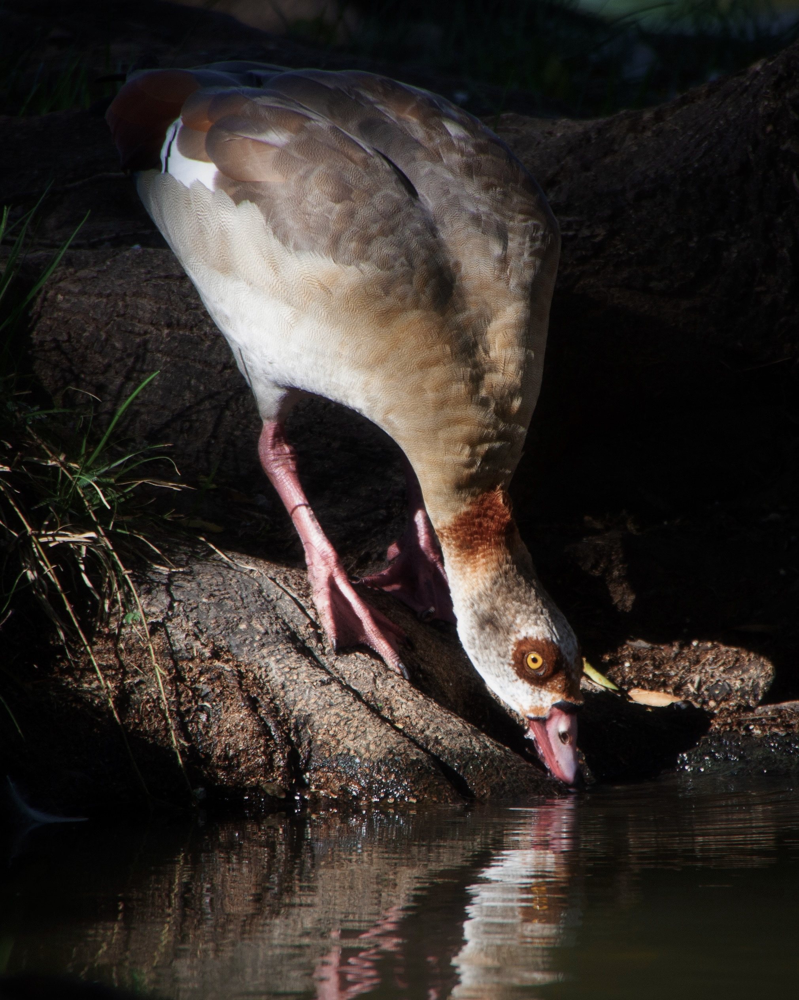

I explored local parks after getting diagnosed with anxiety and ADHD last year as a mindfulness tool. My interest in birding was sparked after finding a Great Blue Heron, a large water bird with a six-foot wingspan. I discovered that birding was a free activity I could do anywhere and instantly feel more relaxed.
I’m not alone in this experience. A 2022 study published in the Scientific Reports found positive associations between individuals hearing and seeing birds and mental well-being even after adjusting for factors like age, gender, ethnicity, education, and occupation. The study had 1300 people use a smartphone app to log their feelings and set controls for other natural aspects like trees, plants, and seeing or hearing water.
Proin elit arcu, rutrum commodo, vehicula tempus, commodo a, risus. Curabitur nec arcu. Donec sollicitudin mi sit amet mauris. Nam elementum quam ullamcorper ante. Etiam aliquet massa et lorem. Mauris dapibus lacus auctor risus. Aenean tempor ullamcorper leo. Vivamus sed magna quis ligula eleifend adipiscing